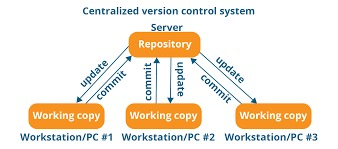
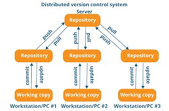
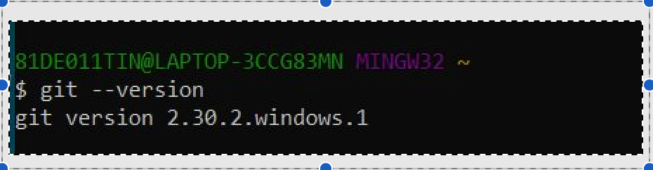
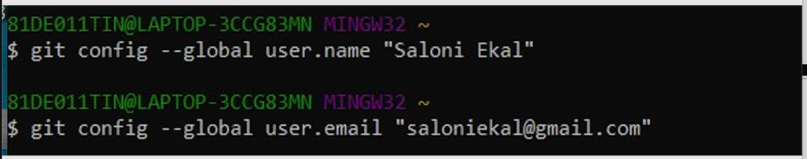
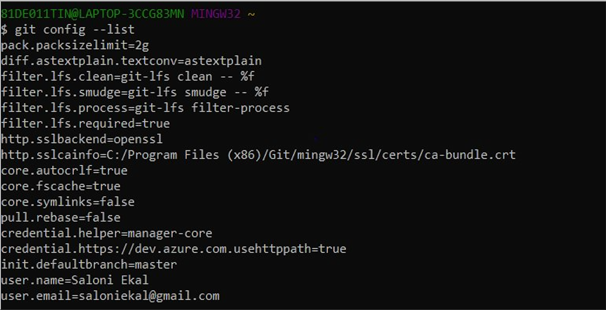
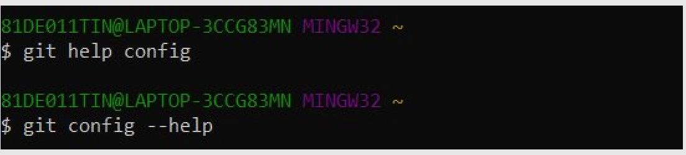
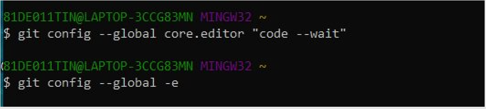
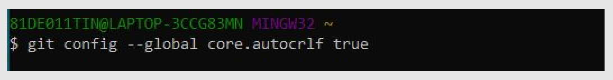
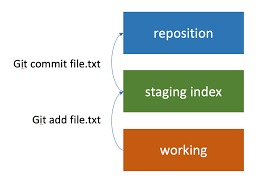

1. Git – an overview
2. Why is a version-controlled system required
3. Types of version-controlled systems
4. Why is Git most popular version control system
5. Various ways to use git – It can be used in various ways as mentioned below
6. Basic configuration of git
QUICK LINK
GitHub
Git – an overview
Git is the most popular version control system in the world.
A version control system records the changes made by the
user over
time, in a special database which is known as repository. It also allows
us to track the history of our project
thus enabling us to see what all
changes were made in the source code, when they were
done, and by
who were they done.
These features help user to back track the
project at any earlier state, in case of errors caused.
Why is a version-controlled system required
Without a version-controlled system, we have to store copies of the
project in various folders, which makes the
task very slow and is not
feasible in case of multiple users working
on a single project. In a
nutshell, in version-controlled systems we can track our project and
work together.
Types of version-controlled systems
1) Centralized version-controlled system –
here all the team members are connected via a central server,
to get the latest copy of the code and share the
latest changes in
the code. Here if the server fails or is unable to function, the whole
system is down as the
individual team members don’t have this source code
copy locally available on their machines.
Ex – Subversion, Team foundation server.
2) Distributed version-controlled system –
here all team members are again connected via a server, but here
unlike centralized systems, all the individual
team members working
on the server have a locally available copy of the source code saved
on their machines. And hence in case of server failure, team members
can share the changes and new copies of the code with each other
eliminating the chances of system shut down.
Ex – Git, mercurial.
| Centralized version-controlled system |
Distributed version-controlled system |


Why is Git most popular version control system –
The following features offered by git makes it the most popular version-controlled system:
1) It is free for all users
2) It is an open source
3) It avails a super-fast speed
4) It is scalable – makes operations like branching and merging easier.
Various ways to use git – It can be used in various ways as mentioned below.
1) Command line – most widely used.
2) Code editors or IDEs – VS Code
3) GUI
Basic configuration of git –
To initialize the process of using git, the first step requires certain details of the user. Here’s a few basic commands implemented using git Bash
Step 1: Checking the version of the git

Step 2: Initializing the git with user’s details which later helps in understanding, who made the changes and what were they.

Step 3: Checking the list of git, helps finding the details of the user on the local machine.
(In the beginning, only two aspects are to be checked i.e, user-name and user email as entered previously)

Step 4: Open the code editor through git.

Step 5: To check end of line function.
(It is useful in the cases where multiple developers working on a project have different operating systems. In case of Windows, LF(line feed) and CR(carriage return) are used to check end of lines whereas for Linux and MacOS, only LF is used.
So, in order to avoid the error this command is used)

Step 6: Get help
(For understanding more about a command, git documentation mentions all the details regarding the same. And this command reverts us directly to official git documentation to seek help)

Basic commands in Git –
• git init - Initializes local git repository
• git add - Add files to the index
• git status - Check status of the working tree
• git commit- commit changes in index
• git push - Push to remote repository
Workflow of git –
There are 3 elements in the basic workflow of git, namely working directory which is on developer’s local machine, staging or index (which does not exist in other version-controlled systems) and git repository which on the server and tracks
all the actions throughout the project development.
Staging area acts as an intermediate area that helps us to review our work and then saves the snapshot of our work into the repository.

So, when the developer makes certain changes in the code, the modified files are added to the staging area (intermediate step) and then they are reviewed. Once everything looks good to be saved, it is then committed into the repository, which
permanently saves the changes made.
VIDEO REFERENCE
1) Git tutorials for beginners
2) Git tutorial series